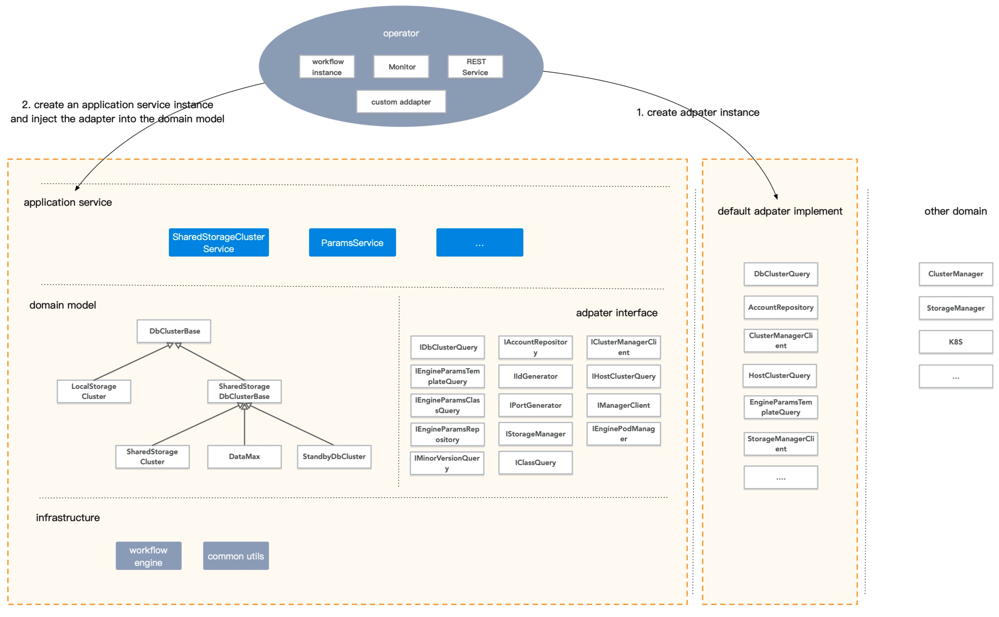

整体架构
PolarDB Stack整体架构如下图所示：

集群组件
PolarDB Stack集群组件整体分为数据面（Data Panel）、管控面（Control Panel）和Paas三部分。
数据面
- PolarDB Engine：数据库引擎，分RW（支持读写）和RO（只读）节点和Standby节点
- PolarFS：用户态文件系统
管控面
- CM（Cluster Manager）：集群管理模块，包括节点拓扑维护，主备角色切换，节点状态汇报等
- LifeCycle Operator：负责数据库集群生命周期管理
- Storage Controller：组件负责存储管理
- Daemon：负责网络管理，节点内部维护、状态采集。
PaaS：PolarDB Stack需要部署在Kubernetes上，系统组件及DB集群实例运行在Docker容器中

代码架构
- 基础层的流程引擎、工具库分别抽出一个工程做实现。
- 领域模型、外部依赖接口定义、应用服务层、适配器默认实现放到同一个工程，作为领域库。
- operator 引用流程引擎、工具库和领域库。
- 在operator中实现工作流、REST、monitor，这些逻辑实现很薄，只是对流程引擎和领域库的调用。如果默认适配器不能满足需求，operator还要针对adapter实现自定义逻辑。
- operator 和领域库的应用服务层交互，防止领域逻辑外泄到应用。operator实例化adapter，并将其传入到service，继而注入到领域模型。
